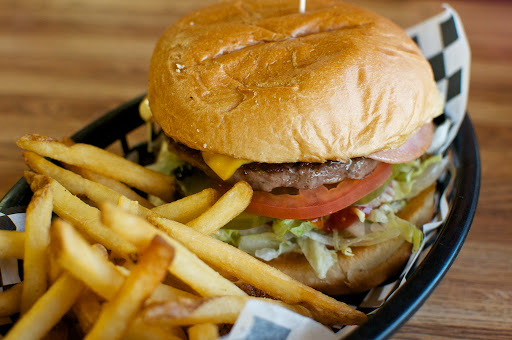
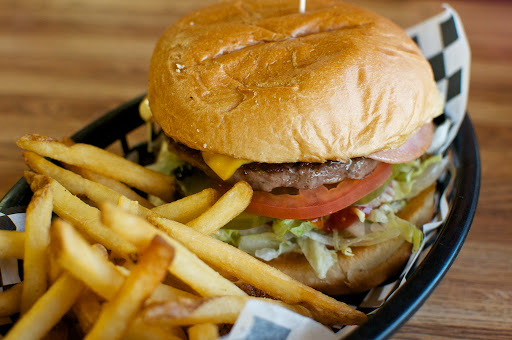

Le Brésil
Etymologie
Les racines étymologiques du terme « Brésil » sont difficiles à reconstruire. Plusieurs hypothèses ont circulé au sujet de l'origine de ce mot. En 1500, le navigateur portugais Pedro Álvares Cabral découvre le Brésil et, pensant avoir découvert une île, le nomme « Ilha de Vera Cruz ».
L’île se révélant faire partie d'un continent (l'Amérique du Sud), il est plus tard baptisé « Terra de Santa Cruz », qui signifie « Terre de la Sainte Croix ». La théorie la plus communément admise est que le mot « Brésil » tire son origine du bois de Brésil ou pernambouc, très apprécié dès le Moyen Âge pour ses propriétés tinctoriales, dont les Portugais reconnurent la présence en quantité lors de leur première exploration du pays.

Gastronomie
La cuisine brésilienne est issue d'influences européennes, indigènes et africaines. Plusieurs des techniques de préparation sont d'origine indigène, mais ont été adaptées par les esclaves et les Portugais. Les esclaves exécutaient leurs propres recettes en remplaçant les ingrédients qui leur manquaient par des ingrédients locaux. La feijoada, le mets typique du pays, en est un bon exemple.
A voir
Les chutes d'Iguaçu comptent parmi les plus belles du monde. A la frontière entre l'Argentine et le Brésil, non loin du Paraguay, cet ensemble de 200 chutes réparties sur 2,5 km à peine, est classé au Patrimoine mondial de l'Unesco. Les chutes d'Iguaçu sont entourées d'une végétation tropicale luxuriante. C'est ici que fut tourné le film Mission.
Oeuvres
L'art brésilien a été développé depuis le XVIe siècle dans des styles différents qui vont du style baroque (le style dominant au Brésil jusqu'au début du XIXe siècle) à l'art abstrait, en passant par le romantisme, le modernisme, l'expressionnisme, le cubisme, le surréalisme. Le cinéma brésilien remonte à la fin du XIXe siècle et a gagné au cours des dernières années une nouvelle reconnaissance internationale, avec l'avènement de films connus au-delà des frontières nationales, comme la Cité de Dieu, qui a reçu de nombreux prix internationaux, quatre nominations aux oscars et a été élu parmi les 100 meilleurs films de tous les temps par le Time magazine.
 
